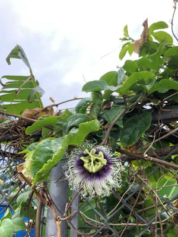

うるがいの話 ある日
最新: 民俗学【うるがいの話 ある日】とは 一日だけのプログです
『うるがいの話』の最新一日だけのプログで、通信料が少なく経済的だ。カニの画像をクリックすると全ての日付が載る『うるがいの話』サイトを表示します
|
|
【うるがいの話】 うるがい(ｳﾙｶﾞｲ urugai)とは、『もずくがに』の名前でとても大きくなります。 |
|---|---|
|
|
【カミマヤーの話】 猫のことを方言でマヤーといいます。カミマヤー（kamimayaa）とは、神の猫のことです。 |
|
【たながぁの音楽】 たながぁ（ﾀﾅｶﾞｰ tanagaa）とは手長えびのことで、何種類かあり大きいのは車 エビぐらいになります。 |

|
【ぶながぁの話】 ぶながぁ(ﾌﾞﾅｶﾞｰ bunagaa)とは、赤い髪の毛、赤い身体、そして身長は１ｍ２０ｃｍ ぐらい、川の蟹を食べているの目撃された。場所は沖縄県国頭郡大宜味村のと ある村僕の隣近所に住んでいる爺さんから、聞いた話です。 |
|
|
【ギーマの話】 ギーマ(giima)とは、山原の里山に咲くスズランに似た、 花を付けます。実は食べられます、 気が付くと口の周りが紫になっています。 |
2023年03月27日 (月）民俗学
18:46

南方熊楠『南方民俗学』の人柱の話（史実）があり、フと『真玉橋の人柱』の
ことが頭によぎった。あれは史実なのだろうかと・・・、ネットで調べた結果
史実でなく、いわゆる伝説であることで落ち着く。
真玉橋の人柱伝説の発祥を研究した中村史（１９９９）によると、この伝承は
、本土で聞かれる「長良の人柱」の伝承が沖縄に伝播したが、沖縄本島では真
玉橋が石橋に架けかえられる際に真玉橋の話に変わっていったものである
ところが、真玉橋の人柱伝説は史実なんですか？－はい－Ｙａｈｏｏ！知恵袋
ID非公開さん
2020/10/7 12:00
2回答
真玉橋の人柱伝説は史実なんですか？
ベストアンサー
jigoroken.さん
2020/10/7 12:52
はい、本当です。大昔は神様に対価を支払って願いを聞いて貰って居ました。
現在の神社で願い事ばかり吐いて感謝しない時代とは大分かけ離れて居ました
ところで、父親が亡くなった日は大安で、葬式は友引で、直ぐ下の妹がその日
に亡くなった。周りは大騒ぎになり、友引に葬式をしたのがいけなかったと。
そこで皆で相談した後、近所の幼馴染の友達のお父さんが、不幸が続かないよ
うに庭で飼っていたニワトリをすぐさま、殺して生贄にした。この前の天寿の
話は、めでたいことなので話は違うらしいが。ついでに、 うるしのかぶれの
おまじないの民俗学はないのかとネットで検索したところ、あるにはあるのだ
がオマジナイは探せなかった。
１８時３８分 ビットコインの総資産 ￥１０、６４５（↑１８０）